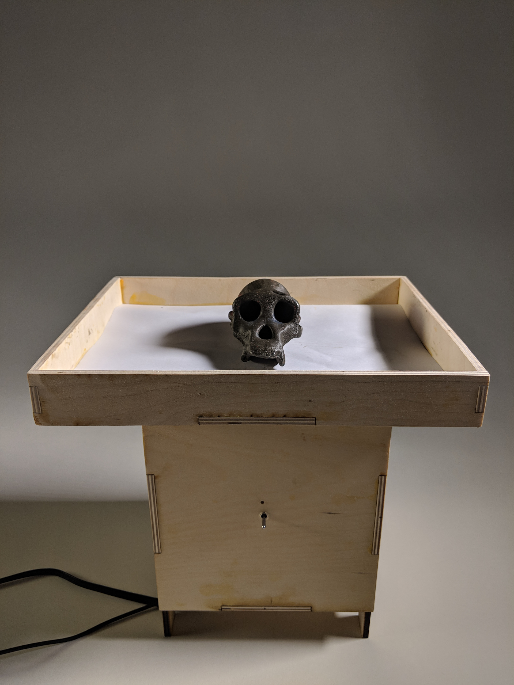
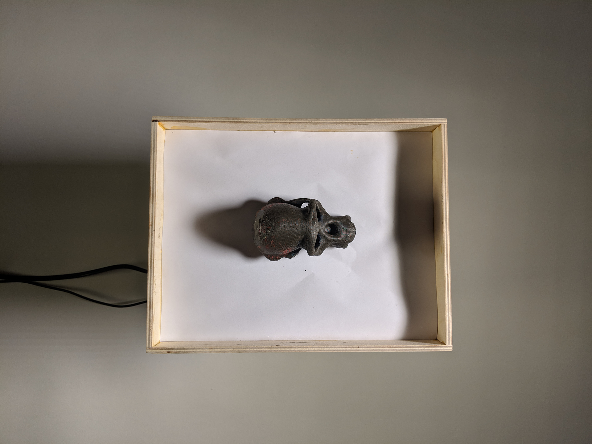
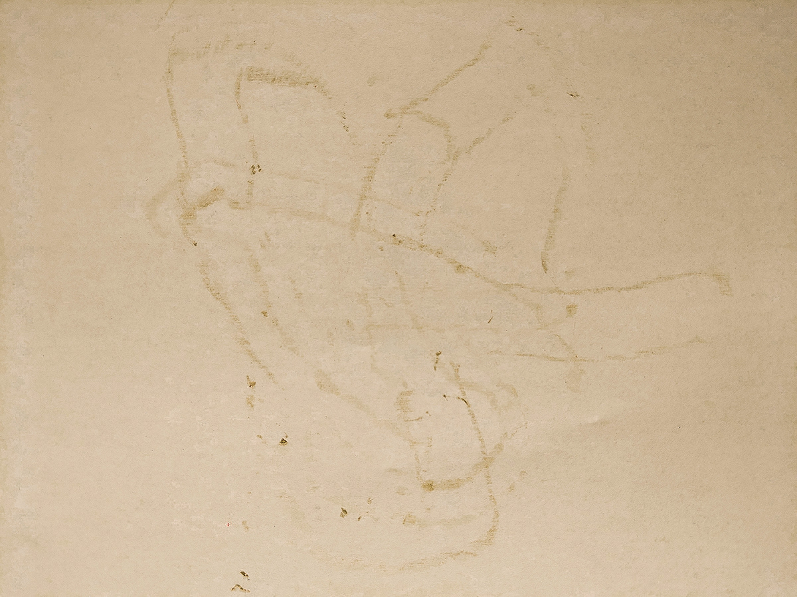
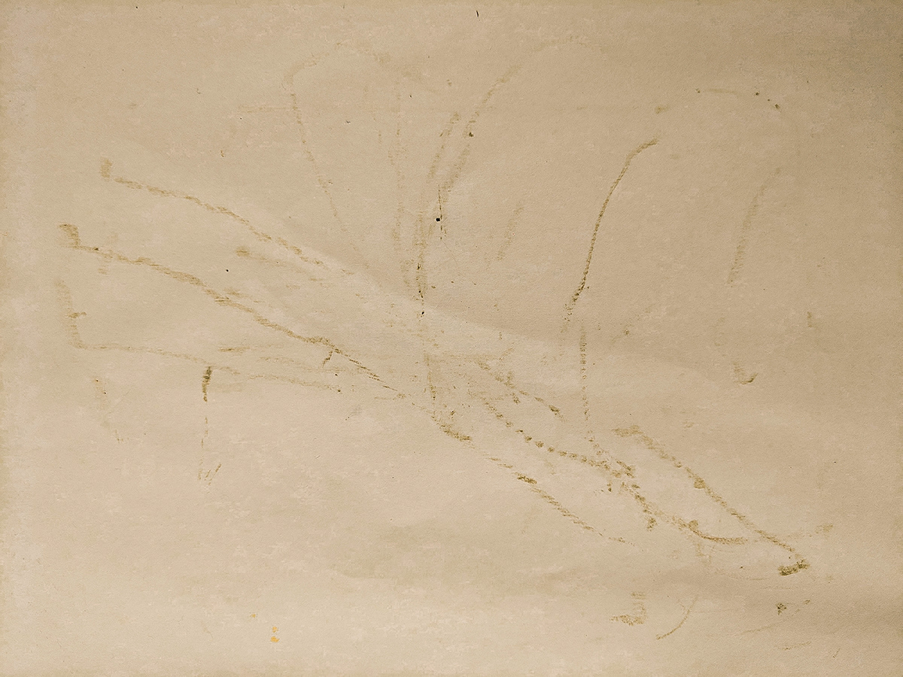

Alternative Crayola
Oct 2019

Tasked with making a drawing machine, I wanted to use an unconventional medium and learn more about molding. I 3D printed a model of a monkey skull, set a silicone mold around it, and poured melted crayons into it. The skull sits on a vibrating table made with a Arduino controlled subwoofer and moves around as it vibrates creating interesting patterns related to its shape.
   